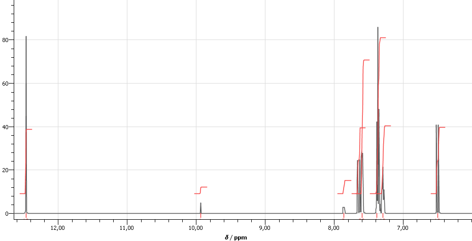
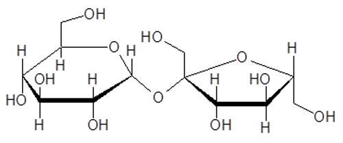

Kemi A
Digital eksamensopgave med adgang til internettet
Vejledning
Prøven
Opgavesættet består af 4 opgaver med i alt 16 delopgaver.
Alle hjælpemidler er tilladt.
Opgavebesvarelsen
Opgavebesvarelsen skal afleveres i et samlet dokument.
Kildehenvisning
Der skal angives kildehenvisning til informationer, data for kemiske forbindelser og lignende, som ikke er givet i opgaveteksten. Benyttes samme kilde i hovedparten af opgavebesvarelsen, kan en generel kildehenvisning angives i opgavebesvarelsen. Der skal fortsat henvises til andre benyttede kilder.
Bedømmelse
Ved bedømmelsen af din besvarelse lægges der vægt på, at du er i stand til at anvende din kemiske viden på nye problemstillinger, og at besvarelsen er ledsaget af forklarende tekst, reaktionsskemaer, beregninger, figurer og kemiske formler i et sådant omfang, at tankegangen klart fremgår.
Svarene på de stillede delopgaver indgår med lige vægt i vurderingen.
Der gives én karakter på baggrund af en helhedsvurdering.
Opgave 1: Kobber
|
Kobber er et vigtigt brugsmetal, og på verdensplan fremstilles årligt omkring 18 millioner ton. Metallet udvindes af kobbermalm, der hentes fra miner fx i Chile og USA. I malmen findes ofte flere forskellige kobbermineraler, opbygget af blandt andet kobberioner og sulfid, S2−.
Et af de vigtigste kobbermineraler er kobberkis, der har formlen CuFeS2. |
Colourbox.com
|
| a) | Vis, at masseprocenten af kobber i kobberkis er 34,6%. |
Et andet vigtigt kobbermineral er chalcocit, Cu2S. Når man skal udvinde kobber fra chalcocit, opvarmes mineralet først til ca. 800 °C. Her forløber blandt andet reaktion 1.
| 2 Cu2S(s) + 3 O2 (g) → 2 Cu2O(s) + 2 SO2 (g) | (1) |
Det kobber(I)oxid, der dannes ved reaktion 1, reagerer videre med uomdannet kobber(I)sulfid og danner kobber.
| 2 Cu2O(s) + Cu2S(s) → 6 Cu(s) + SO2(g) | (2) |
| b) | Beregn ∆S° for reaktion 2.
Kommenter resultatet i forhold til reaktionsskemaet. |
De fleste kobbermalme indeholder ret små mængder kobber, og typisk er masseprocenten af kobber mindre end 1 %. For at bestemme indholdet af kobber i en malm opkoncentreres 200 g af malmen ved en række processer, så man til sidst ender med 50,0 mL opløsning, hvor alt kobber fra malmen findes som Cu2+(aq).
For at bestemme koncentrationen af Cu2+ i opløsningen lader man kobber(II)ionerne reagere fuldstændigt med iodid,
I−. Herved dannes diiod og kobber(I)iodid.
For at bestemme koncentrationen af Cu2+ i opløsningen lader man kobber(II)ionerne reagere fuldstændigt med iodid,
I−. Herved dannes diiod og kobber(I)iodid.
| 2 Cu2+(aq) + 4 l−(aq) → 2 Cul(s) + l2(aq) | (3) |
Mængden af diiod, der er dannet ved reaktion 3, bestemmes ved titrering med thiosulfat, S2O32−, der reagerer med I2 som vist herunder.
| l2(aq) + 2 S2O32− (aq) → 2 l−(aq) + 2 S4O62−(aq) | (4) |
Som indikator benyttes stivelse, der giver en farvereaktion med I2. Af praktiske grunde tilsættes indikatoren først umiddelbart før ækvivalenspunktet.
Filmen herunder viser titreringen.
Filmen herunder viser titreringen.
| c) | Beregn indholdet af kobber i malmen udtrykt i masseprocent. |
Opgave 2: Cumarsyre
|
I naturen findes to stereoisomere stoffer med nedenstående struktur. Den ene stereoisomer, A, er vist nedenfor.
Figur 1
|
Colourbox.dk
|
Filer til figur 1
| a) | Tegn strukturen af et stof, der er stereoisomer med A. Benyt tegneprogram. |
En af de steroisomere former er en cumarsyre, der findes i honning. Denne cumarsyre har antioxidativ virkning og menes at kunne nedsætte risikoen for mavekræft.
Nyere forskning viser, at denne cumarsyre gør bier mere modstandsdygtige over for nogle pesticider.
Cumarsyren kan fremstilles ved en eliminationsreaktion katalyseret af et enzym.
Filer til figur 2
Nyere forskning viser, at denne cumarsyre gør bier mere modstandsdygtige over for nogle pesticider.
Cumarsyren kan fremstilles ved en eliminationsreaktion katalyseret af et enzym.
|
Figur 2
|
Filer til figur 2
| b) | Anfør hvilken aminosyre cumarsyren dannes ud fra. Færdiggør reaktionsskemaet og tegn R-gruppen ud. Benyt eventuelt Figur 2-filen. |
Fototrofe bakterier er organismer, der absorberer lys for at få energi. En type af fototrofe bakterier indeholder et protein, som kan binde cumarsyren. Ved absorption af synligt lys, omdannes curmarsyren til sin stereoisomer.
På figur 3 ses en model, der viser cumarsyren og det aktive sted i proteinet. Der er vist sidekæder i aminosyreenhederne i proteinet, der er vigtige for binding mellem cumarsyre og proteinet.
Filer til figur 3
På figur 3 ses en model, der viser cumarsyren og det aktive sted i proteinet. Der er vist sidekæder i aminosyreenhederne i proteinet, der er vigtige for binding mellem cumarsyre og proteinet.
|
Figur 3
|
Filer til figur 3
| c) | Vis, hvordan substratet bindes og fastholdes til proteinet. Gør rede for hvilke bindingstyper, der fastholder cumarsyren i proteinet. |
Opgave 3: Kanelsyre
|
Kanelsyre udvindes af kanelolie eller af balsammer, fx storax. Methyl-, ethyl-, og benzylestere af kanelsyre anvendes i stor udstrækning i parfumer.
Kanelsyre
Figur 4 |
Colourbox.com
|
Filer til figur 4
| a) | Marker de funktionelle grupper i kanelsyre, og angiv hvilke stofklasser de tilhører. |
En vandig opløsning af kanelsyre har koncentrationen 0,0034 m.
| b) | Angiv pKs for kanelsyre. Beregn pH i opløsningen. |
Kanelsyre kan fremstilles syntetisk ud fra benzaldehyd og ethansyreanhydrid.
|
Figur 5
|
Filer til figur 5
| c) | Generer et 1H-NMR-spektrum med integralkurver af kanelsyre. Forklar integralforholdene for signalerne i spektret ud fra kanelsyres struktur. |
På figur 6 ses et 1H-NMR-spektrum af produktet. 1H-NMR-spektret er kørt ved 500 MHz.
|

Figur 6
|
En forstørrelse af signalerne mellem 6,40 ppm og 8.00 ppm i 1H-NMR-spektret af produktet ses i figur 7.
|
Figur 7
|
Produktet indeholder en urenhed. Integralforholdene i spektret er både et mål for forholdet mellem antallet af H-atomer med samme kemiske omgivelser i et molekyle, dvs H-atomer som er bundet på samme måde og placeret ens, og et mål for stofmængdeforholdet mellem forskellige stoffer i en blanding.
| d) |
Forklar koblingsmønstre for signaler, der skyldes H-atomer i kanelsyre, som ikke sidder på den aromatiske ring. Identificer urenheden i produktet. Argumenter ud fra kemiske skift, integralkurve og koblingsmønstre. |
|
| e) | Bestem, hvor stor en procentdel af produktets masse, der er kanelsyre. |
Filmen herunder viser oprensningen af kanelsyre.
Fordelingsforholdet er udtrykt ved størrelsen D, som er forholdet mellem kanelsyres formelle koncentrationer i de to faser.
Fordelingsforholdet er udtrykt ved størrelsen D, som er forholdet mellem kanelsyres formelle koncentrationer i de to faser.
|
D = ckanelsyre(octan-1-ol)ckanelsyre(aq)
|
| f) | Tegn en graf, som viser, hvordan log D afhænger af pH for kanelsyre. Forklar, hvorfor pH reguleres før ekstraktionen. |
|
| g) | Forklar, observationerne i bægerglasset, når pH sænkes, og anfør relevante reaktionsskemaer. |
Opgave 4: Fyldte chokolader
|
Enzymet invertase anvendes i chokoladeindustrien til at fremstille fyldte chokoladestykker med flydende indhold. Ved fremstillingen sødes fyldet med sucrose.
 sucrose
Figur 8 |
Opgavekommissionen
|
Fyldet er på fast form, når det dækkes med flydende chokolade. Chokoladen størkner, og efterhånden får indholdet en flydende konsistens. Det sker, fordi fyldet er tilsat enzymet invertase, som katalyserer hydrolysen af sucrose til glucose og fructose.
Den enzymatiske omdannelse af sucrose undersøges af en elev. En reaktionsblanding fremstilles ved at overføre
20,00 mL 2,50 m sucrose-opløsning til en 100 mL målekolbe og fylde op til mærket med en puffer-opløsning.
| a) | Beregn stofmængdekoncentrationen af sucrose i blandingen. |
Der fremstilles en række reaktionsblandinger med forskellige koncentrationer af sucrose. Alle reaktionsblandinger indeholder enzymet invertase i samme koncentration.
Begyndelseshastigheden v for hydrolyse af sucrose bestemmes for de forskellige sucrosekoncentrationer i reaktionsblandingen. Resultaterne er vist i figur 9 og gemt i følgende filtyper
Excel-fil DK, excel-fil USA, kommasepareret fil og mellemrumsepareret fil
Begyndelseshastigheden v for hydrolyse af sucrose bestemmes for de forskellige sucrosekoncentrationer i reaktionsblandingen. Resultaterne er vist i figur 9 og gemt i følgende filtyper
Excel-fil DK, excel-fil USA, kommasepareret fil og mellemrumsepareret fil
|
Figur 9
|
| b) |
Vis, at hastighedsudtrykket med god tilnærmelse svarer til en 1. ordens reaktion med hensyn til sucrose for sucrosekoncentrationer under 0,02 M. Beregn hastighedskonstanten for 1.ordens-hastighedsudtrykket. |
Sammenhængen mellem reaktionshastigheden og koncentrationen af sucrose kan beskrives ved nedenstående lineære model
1v
= a · 1[sucrose]
+ b
b =
1vmax
og vmax er den maksimale reaktionshastighed, som opnås, når enzymet er mættet med substrat.
| c) |
Bestem vmax ud fra måleresultaterne. Kommenter værdien af vmax i forhold til det udleverede datamateriale. |
Filer til opgaverne
| Filnavn | Opgave | Figur | Beskrivelse |
| 152612_figur1.mrv | 2 | 1 | MarvinSketch fil med strukturformel til A |
| 152612_figur1.sk2 | 2 | 1 | ChemSketch fil med strukturformel til A |
| 152612_figur2.mrv | 2 | 2 | MarvinSketch fil med reaktionsskema i figur 2 |
| 152612_figur2.sk2 | 2 | 2 | ChemSketch fil med reaktionsskema i figur 2 |
| 152612_figur3.mrv | 2 | 3 | MarvinSketch fil med strukturer i figur 3 |
| 152612_figur3.sk2 | 2 | 3 | ChemSketch fil med strukturer i figur 3 |
| 152612_figur4.mrv | 3 | 4 | MarvinSketch fil med strukturformel af kanelsyre |
| 152612_figur4.sk2 | 3 | 4 | ChemSketch fil med strukturformel af kanelsyre |
| 152612_figur5.mrv | 3 | 5 | MarvinSketch fil med reaktionsskema i figur 5 |
| 152612_figur5.sk2 | 3 | 5 | ChemSketch fil med reaktionsskema i figur 5 |
| 152612_figur9_dk.xls | 4 | - | Excel datafil, dansk |
| 152612_figur9_usa.xls | 4 | - | Excel datafil, usa |
| 152612_figur9_kommasepareret.txt | 4 | - | Kommasepareret fil |
| 152612_figur9_mellemrumsepareret.txt | 4 | - | Mellemrumssepareret fil |
Klik her for at downloade alle filer.
Teknisk hjælp
Der er under figur 1 - 5 en zip fil der indeholder en .mrv og en .sk2 fil.
Man skal udpakke filerne for at disse bliver redigerbare, se her mere info.
Til at åbne .mrv filerne skal man bruge MarvinSketch, se her hvordan filerne åbnes.
Til at åbne .sk2 skal man bruge ChemSketch, se her hvordan filerne åbnes.